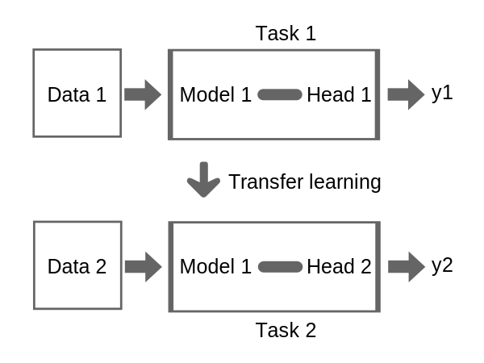

library(torch)
cuda_is_available()[1] FALSEMethods for increasing training efficiency can be roughly split into:
Using a GPU is crucial when training relatively large neural networks because GPUs are specifically designed to handle the parallel processing required for complex computations. To use a GPU in mlr3torch, we can set the device parameter to “cuda”. By default, it is set to “auto”, which will use a GPU if it is available and otherwise fall back to the CPU.
To check if a GPU is available, we can use the torch::cuda_is_available() function.
library(torch)
cuda_is_available()[1] FALSEIf you have an M1 Mac (or later), you can also use the available graphics card by setting the device parameter to "mps". You can check this by running:
backends_mps_is_available()[1] TRUETo demonstrate the speed improvements obtained by using a GPU, we conduct a large matrix operation on a GPU and a CPU. We start by randomly sampling a matrix of size 1000x1000.
x_cpu = torch_randn(1000, 1000, device = "cpu")Below, we perform a matrix multiplication on the CPU and the GPU and compare the timings.
# this will only run if a GPU is available
x_cuda = x_cpu$cuda()
bench::mark(
cpu = x_cpu$matmul(x_cpu),
cuda = x_cuda$matmul(x_cuda)
)Training large networks on a CPU is not a recommended approach, but it can be useful for smaller networks or when you don’t have a GPU. You can still use multiple threads to speed up the execution of operations. Note that the code below will not run on macOS, as it is not possible to set the number of threads on macOS.
# this will be skipped on macOS
bench::mark(
{torch_set_num_threads(1L); x_cpu$matmul(x_cpu)},
{torch_set_num_threads(16L); x_cpu$matmul(x_cpu)}
)torch also allows for interop-parallelization, but this is more advanced and code needs to be written in a specific way.
Question 1: On a CPU with 4 cores, does it make sense to set the number of threads to values greater than 4? Explain your answer.
Question 2: On a CPU with 64 cores, is it always the case that using 64 threads is better than using 32 threads?
Not necessarily. Using more threads will mean that:
Besides speeding up the computation of operations in the forward and backward pass, another possible bottleneck is the loading of data. There are various ways to improve data loading speed:
dataset classThese approaches will now be discussed.
When implementing a dataset, we need to define:
The tiny imagenet dataset is a dataset of 100,000 images of size 64x64x3. It is a subset of the famous imagenet dataset. Below, we show some examples from the dataset:

We will now consider different ways to write a torch::dataset implementation for this data. Assume we have some image paths stored in a character vector as well as in an array where they are already loaded into memory.
str(image_paths) chr [1:100] "/Users/sebi/Library/Caches/org.R-project.R/R/mlr3torch/datasets/tiny_imagenet/raw/tiny-imagenet-200/train/n0144"| __truncated__ ...str(image_array) num [1:100, 1:3, 1:64, 1:64] 1 0.0784 0.4706 0.5608 0.5647 ...An individual image can, for example, be loaded using the torchvision::base_loader() function:
library(torchvision)
str(base_loader(image_paths[1])) num [1:64, 1:64, 1:3] 1 1 1 1 1 ...Question 1: Reading From Disk or RAM
Which of the following is the faster way to load the images? Explain why.
Loading the images from disk:
ds_disk = dataset("image_paths",
initialize = function(image_paths) {
self$image_paths = image_paths
},
.getitem = function(i) {
torch_tensor(torchvision::base_loader(self$image_paths[i]))
},
.length = function() {
length(self$image_paths)
}
)(image_paths)Loading the images from an array:
ds_ram = dataset("image_array",
initialize = function(image_array) {
self$image_array = image_array
},
.getbatch = function(i) {
torch_tensor(self$image_array[i, , , ])
},
.length = function() {
nrow(self$image_array)
}
)(image_array)Generally, loading images from RAM is significantly faster than loading them from disk. Although the benchmark presented below may seem somewhat ‘unfair’ since ds_ram has already loaded the images into memory, this difference is evident in practice. When iterating over the dataset for multiple epochs, the first method will need to reload the images from disk for each epoch, while the second method only requires a single loading of the images into memory.
iter = function(ds, ..., epochs = 1) {
dl = torch::dataloader(ds, batch_size = 16, ...)
for (epoch in seq_len(epochs)) {
coro::loop(for(batch in dl) {
batch
})
}
}
bench::mark(
disk = iter(ds_disk),
ram = iter(ds_ram),
check = FALSE
)# A tibble: 2 × 6
expression min median `itr/sec` mem_alloc `gc/sec`
<bch:expr> <bch:tm> <bch:tm> <dbl> <bch:byt> <dbl>
1 disk 19.81ms 22.13ms 44.0 14MB 13.8
2 ram 8.75ms 9.75ms 97.1 9.4MB 22.2Question 2: (Don’t) Copy that
Consider now the next dataset implementation:
ds_tensor = dataset("tensor",
initialize = function(image_array) {
self$tensor = torch_tensor(image_array)
},
.getitem = function(i) {
self$tensor[i, ..]
},
.length = function() {
nrow(self$tensor)
}
)(image_array)Do you think this implementation is faster or slower than the ds_ram implementation? Explain why.
This implementation is faster than the ds_ram implementation. This is because the ds_tensor implementation copies the R array to a torch tensor only once, whereas the ds_ram implementation copies the R array to a torch tensor for each item.
bench::mark(
tensor = iter(ds_tensor),
array = iter(ds_ram),
check = FALSE
)# A tibble: 2 × 6
expression min median `itr/sec` mem_alloc `gc/sec`
<bch:expr> <bch:tm> <bch:tm> <dbl> <bch:byt> <dbl>
1 tensor 4.45ms 5.1ms 195. 96.08KB 6.71
2 array 8.42ms 9.75ms 101. 9.38MB 25.9 Question 3: $.getbatch() vs $.getitem()
Which implementation is faster? Explain why.
ds_tensor_batch = dataset("tensor_batch",
initialize = function(image_array) {
self$tensor = torch_tensor(image_array)
},
.getbatch = function(i) {
self$tensor[i, ..]
},
.length = function() {
nrow(self$tensor)
}
)(image_array)The $.getbatch() implementation is faster than the $.getitem() implementation. This is because when using the $.getitem() method, the batch for indices ids is obtained by calling $.getitem(id) for each index in ids and then stacking them together, which requires a new tensor allocation. Slicing the tensor, however, avoids this allocation when shuffle = TRUE (which is also the default).
bench::mark(
getbatch = iter(ds_tensor_batch),
getitem = iter(ds_tensor),
check = FALSE
)# A tibble: 2 × 6
expression min median `itr/sec` mem_alloc `gc/sec`
<bch:expr> <bch:tm> <bch:tm> <dbl> <bch:byt> <dbl>
1 getbatch 1.66ms 2.01ms 473. 3.83KB 4.44
2 getitem 4.71ms 5.14ms 192. 54.69KB 7.19In Deep Learning, datasets can be very large, and it might therefore be the case that the data is simply too large to fit into memory. In this case, we can use parallel data loading to speed up the data loading process. Instead of loading the data sequentially in the main process, other R processes will be started that execute the data loading. For example, if we set num_workers = 4L, 4 R processes will be started that load the data, while the main process is free to train the model. These processes then send the batches to the main process. The image below visualizes this process:
Creating such a parallel dataloader is as easy as setting the num_workers parameter to a value greater than 0.
Note that there is some communication overhead that results from sending the batches from the worker to the main process. This will hopefully be reduced in the future, but is currently there. For this reason, parallel data loading is therefore – currently – only beneficial when it is slow, e.g., because of loading the data from disk or because of expensive preprocessing.
One thing we have ignored so far is that when training using a GPU, the data needs to be moved to the GPU. This is because a GPU has its own memory (VRAM), and the data needs to be moved to this memory before it can be used for training. The moving of the data to the GPU cannot be done on the processes that are loading the data but must be done in the main process, i.e., after the batch was received from (possibly parallelized) dataloader. One way to speed up the data loading process is to pin the memory of the data to the GPU. Before a tensor can be moved from RAM to VRAM, it needs to be in so-called page-locked memory, which can be done using the pin_memory parameter.
iter_cuda = function(ds, pin_memory = TRUE) {
dl = torch::dataloader(ds, batch_size = 16, pin_memory = pin_memory)
coro::loop(for(batch in dl) {
batch$cuda()
})
}
bench::mark(
not_pinned = iter_cuda(ds_disk, pin_memory = FALSE),
pinned = iter_cuda(ds_disk, pin_memory = TRUE)
)In order to use parallel data loading or memory pinning with mlr3torch, these parameters can simply be specified in the learner:
lrn("classif.mlp", num_workers = 8L, pin_memory = TRUE, device = "cuda")<LearnerTorchMLP[classif]:classif.mlp>: My Little Powny
* Model: -
* Parameters: device=cuda, num_threads=1, num_interop_threads=1, seed=random, jit_trace=FALSE, eval_freq=1,
measures_train=<list>, measures_valid=<list>, patience=0, min_delta=0, num_workers=8, pin_memory=TRUE,
neurons=integer(0), p=0.5, activation=<nn_relu>, activation_args=<list>
* Validate: NULL
* Packages: mlr3, mlr3torch, torch
* Predict Types: [response], prob
* Feature Types: integer, numeric, lazy_tensor
* Properties: internal_tuning, marshal, multiclass, twoclass, validation
* Optimizer: adam
* Loss: cross_entropy
* Callbacks: -Some special care needs to be taken when using torch (or mlr3torch) in order to get good performance. In the future, this will hopefully not be necessary anymore, but is currently required.
In torch, different versions of optimizers exist:
optim_adamw<optim_adamw> object generator
Inherits from: <inherit>
Public:
initialize: function (params, lr = 0.001, betas = c(0.9, 0.999), eps = 1e-08,
loop_fun: function (group, param, g, p)
step: function (closure = NULL)
clone: function (deep = FALSE)
Parent env: <environment: 0x130e5aee0>
Locked objects: FALSE
Locked class: FALSE
Portable: TRUEoptim_ignite_adamw<optim_ignite_adamw> object generator
<optim_ignite> object generator
Inherits from: <inherit>
Public:
initialize: function (params, lr = 0.001, betas = c(0.9, 0.999), eps = 1e-08,
clone: function (deep = FALSE)
Private:
.config_names: lr betas eps weight_decay amsgrad
.state_names: exp_avg exp_avg_sq max_exp_avg_sq step
.optim: function (params, ...)
.get_states: function (opt)
.set_states: function (opt, params, states)
.add_param_group: function (opt, params, lr, betas, eps, weight_decay, amsgrad)
.assert_params: function (lr, betas, eps, weight_decay, amsgrad)
.set_param_group_options: function (opt, list)
.zero_grad: function (opt)
.get_param_groups: function (ptr)
Parent env: <environment: 0x1171a0710>
Locked objects: FALSE
Locked class: FALSE
Portable: TRUEThe ‘ignite’ indicates that the optimizer is a version that is optimized for performance. Not for all optimizers does an ignite version exist, but for the most common ones, it does.
Below, we compare the performance of the default optimizer and the ignite optimizer and see that the latter is considerably faster.
adamw = as_torch_optimizer(torch::optim_adamw)
ignite_adamw = as_torch_optimizer(torch::optim_ignite_adamw)
learner = lrn("classif.mlp", epochs = 10, neurons = c(100, 100), batch_size = 32, optimizer = adamw)
learner_ignite = learner$clone(deep = TRUE)
learner_ignite$configure(
optimizer = ignite_adamw
)
task_sonar = tsk("sonar")
bench::mark(
learner$train(task_sonar),
learner_ignite$train(task_sonar),
check = FALSE
)Warning: Some expressions had a GC in every iteration; so filtering is disabled.# A tibble: 2 × 6
expression min median `itr/sec` mem_alloc `gc/sec`
<bch:expr> <bch:tm> <bch:tm> <dbl> <bch:byt> <dbl>
1 learner$train(task_sonar) 625ms 625ms 1.60 15.7MB 4.80
2 learner_ignite$train(task_sonar) 228ms 260ms 3.68 11.2MB 4.91JIT (Just-In-Time) compilation is a runtime optimization technique that compiles code into machine code during execution rather than beforehand. This has different advantages:
In torch, this can either be done using TorchScript or by tracing a model. We will briefly discuss both approaches, but for more information, see the torch documentation.
TorchScript is a subset of Python – i.e., its own programming language – that can be used to define compiled functions. In R, this is available via the jit_compile function.
f = jit_compile("
def f(x, w, bias):
return x @ w + bias
")$f
x = torch_randn(10, 10)
w = torch_randn(10, 1)
bias = torch_randn(1)
out = f(x, w, bias)
str(out)Float [1:10, 1:1]Besides syntax, there are some important differences between TorchScript and R:
Below, we define a function that takes a list of tensors and calculates their sum.
sum_jit = jit_compile("
def sum_jit(xs: List[Tensor]):
output = torch.zeros_like(xs[0])
for x in xs:
output = output + x
return output
")$sum_jit
sum_jit(list(torch_randn(1), torch_randn(1)))torch_tensor
-0.7121
[ CPUFloatType{1} ]The alternative to writing TorchScript is to write your module in R and to use jit_trace to compile it.
f2 = function(x, w, bias) {
x$matmul(w) + bias
}
# need to provide some example input
# arguments are passed by position
f2 = jit_trace(f2, torch_randn(10, 10), torch_randn(10, 100), torch_randn(100))
out2 = f2(x, w, bias)
torch_equal(out, out2)[1] TRUEAn advantage of trace-compilation is that it even allows you to JIT-compile modules, which is currently not possible with jit_compile.
net = nn_sequential(
nn_linear(10, 100),
nn_relu(),
nn_linear(100, 10)
)
net_jit = jit_trace(net, torch_randn(10, 10))
torch_equal(net(x), net_jit(x))[1] TRUETrace-compilation is restrictive because it only records operations applied to torch tensors and is unaware of R control flow, so you need to be careful when using it. Furthermore, it only accepts torch tensors as arguments. Unless you have dynamic inputs and outputs or modify the configuration of the module, trace-compilation should usually work. You can also check this by running the original and trace-jitted module on some example inputs and see if they return the same result.
A trace-jitted module does respect the mode of the network, i.e., whether it is training or evaluating.
In mlr3torch, trace compilation is also available and can be enabled by setting jit_trace = TRUE in the learner.
learner = lrn("classif.mlp", jit_trace = TRUE)You can also combine TorchScript with tracing:
net_both = nn_module(
initialize = function() {
self$linear = nn_linear(1, 1)
},
forward = function(x) {
self$linear(sum_jit(x))
}
)()
net_both(list(torch_randn(1), torch_randn(1)))torch_tensor
1.0027
[ CPUFloatType{1} ][ grad_fn = <ViewBackward0> ]net_both(list(torch_randn(1)))torch_tensor
0.01 *
8.5286
[ CPUFloatType{1} ][ grad_fn = <ViewBackward0> ]Question 1: Consider the trace-jitted function below. Can you predict the output of the last two lines? Can you explain why this happens?
f = function(a, b, multiply) {
if (multiply$item()) {
a * b
} else {
a + b
}
}
fjit = jit_trace(f, torch_tensor(1), torch_tensor(2), torch_tensor(TRUE))
fjit(torch_tensor(2), torch_tensor(3), torch_tensor(TRUE))torch_tensor
6
[ CPUFloatType{1} ]fjit(torch_tensor(2), torch_tensor(3), torch_tensor(FALSE))torch_tensor
6
[ CPUFloatType{1} ]Question 2: Answer the same question for the following function:
f = function(a, b, multiply) {
torch_where(multiply, a * b, a + b)
}
fjit = jit_trace(f, torch_tensor(1), torch_tensor(2), torch_tensor(TRUE))
fjit(torch_tensor(2), torch_tensor(3), torch_tensor(TRUE))torch_tensor
6
[ CPUFloatType{1} ]fjit(torch_tensor(2), torch_tensor(3), torch_tensor(FALSE))torch_tensor
5
[ CPUFloatType{1} ]Another way to speed up the training process is to use mixed precision training. This technique involves training the model using both 16-bit and 32-bit floating point numbers. This allows reducing the memory footprint of the model and speeding up the training process.
We won’t cover this here, but refer to the torch documentation that explains how to do this.
For more details on this topic, see the corresponding chapter in the mlr3 book.
As we have already seen in one of the previous notebooks, in deep learning, some part of the data is often used for validation purposes. This allows monitoring the performance of the model on unseen data.
In mlr3torch, we can track the performance of the model on a validation set by specifying:
validate, which is the ratio of the data that is used for validationmeasures_valid, which is a list of measures to use for validationeval_freq, which is the frequency at which the validation is performedcallbacks, which is a list of callbacks to use during training, in this case, we use the history callback, which records the performance of the model on the validation set at regular intervals, enabling us to monitor and analyze the model’s performance over time.While mlr3torch comes with predefined callbacks, it is also possible to define custom callbacks that modify the training process.
task = tsk("sonar")
mlp_learner = lrn("classif.mlp",
neurons = c(50, 50), batch_size = 256, epochs = 400,
optimizer = t_opt("adam", lr = 0.003),
predict_type = "prob", jit_trace = TRUE,
# Validation / Performance Monitoring
validate = 0.3, # how much data to use for validation
measures_valid = msr("classif.logloss"), # how to evaluate train performance
measures_train = msr("classif.logloss"), # how to evaluate validation performance
callbacks = t_clbk("history"), # history callbacks save train and validation performance
eval_freq = 10 # after how many training epochs to perform validation
)
mlp_learner$train(task)
history = mlp_learner$model$callbacks$history
str(history)Classes 'data.table' and 'data.frame': 40 obs. of 3 variables:
$ epoch : num 10 20 30 40 50 60 70 80 90 100 ...
$ train.classif.logloss: num 0.678 0.643 0.569 0.515 0.478 ...
$ valid.classif.logloss: num 0.667 0.618 0.536 0.469 0.436 ...
- attr(*, ".internal.selfref")=<externalptr>
- attr(*, "sorted")= chr "epoch"head(history)Key: <epoch>
epoch train.classif.logloss valid.classif.logloss
<num> <num> <num>
1: 10 0.6775741 0.6665855
2: 20 0.6430574 0.6176948
3: 30 0.5685190 0.5364953
4: 40 0.5151559 0.4694589
5: 50 0.4780497 0.4363074
6: 60 0.3861667 0.4153698Below we plot the training and validation for the different epochs:
Instead of only monitoring the validation loss (and watching it get worse and worse), we can also stop the training process dynamically when the validation loss begins to increase. This regularization technique is called early stopping, and it prevents overfitting during the training of iteratively trained machine learning models. It involves monitoring the validation loss during training and stopping the training process when the validation loss begins to increase, indicating that the model is starting to overfit the training data.
The key configuration option for early stopping is the patience parameter, which defines the number of epochs to wait after the last improvement in validation loss before stopping the training. For example, if patience is set to 10, the training will continue for 10 additional epochs after the last observed improvement in validation loss. If no improvement is seen during this period, training will be halted.
Advantages of early stopping include:
Now, let’s train the learner again using early stopping with a patience of 10 epochs:
mlp_learner$param_set$set_values(
patience = 5
)
mlp_learner$train(task)
mlp_learner$internal_tuned_values$epochs[1] 160Beyond only tuning the number of epochs, mlr3’s internal tuning mechanism also allows tuning the number of epochs internally while using an offline tuning method to optimize other hyperparameters. To use this, we can set the parameters we want to tune TuneTokens:
library(mlr3tuning)
mlp_learner$param_set$set_values(
epochs = to_tune(upper = 100, internal = TRUE),
opt.lr = to_tune(lower = 1e-4, upper = 1e-1, logscale = TRUE)
)We could now pass this learner to a tuner, where the tuner would only optimize the learning rate, while the learner optimizes the epochs internally.
Another essential aspect of training neural networks efficiently and effectively is the design of the network architecture, which can be a challenging task. However, for many tasks, there are well-known architectures that perform well and can be used as a starting point. Unless there is a specific reason to design a new architecture, it is recommended to use such an architecture.
Because the Python deep learning ecosystem is so large, many more architectures are implemented in Python than in R. One way to use them in R is to simply translate the PyTorch code to (R-)torch. While PyTorch and (R-)torch are quite similar, there are some differences, e.g., 1-based and 0-based indexing. The torch website contains a brief tutorial on how to do this.
Nonetheless, we will cover important techniques that can be used to speed up the training process, namely batch normalization and dropout.
Batch Normalization is an important technique in deep learning that contributed significantly to speeding up the training process.
The formula for batch normalization (during training) is given by:
\[ \hat{x} = \frac{x - \mu_B}{\sqrt{\sigma_B^2 + \epsilon}} \]
where:
During inference, the module uses the running mean and variance of the training data to normalize the input.
In torch, different versions of batch normalization exist for different dimensions of the input tensor. Below, we illustrate the batch normalization module using a 1D input tensor (the batch dimension does not count here)
x = torch_randn(10, 5)
bn = nn_batch_norm1d(num_features = 5)
bn(x)torch_tensor
1.4613 -1.3934 -0.2146 1.0406 0.1413
-0.9634 -0.3388 1.7441 0.7744 2.1476
-2.0328 0.5667 -2.0592 0.4071 -0.0529
0.6778 0.3264 0.2637 -0.2301 -0.0409
-0.9243 0.1298 -0.6447 -1.5477 -2.1935
0.8150 -0.1962 0.7988 -1.5426 0.1137
-0.2350 -2.0121 -0.1847 1.1725 0.0143
0.8381 0.6141 0.9971 1.0148 -0.5667
0.2166 0.7147 -0.7208 -0.1408 -0.0285
0.1467 1.5887 0.0203 -0.9482 0.4657
[ CPUFloatType{10,5} ][ grad_fn = <NativeBatchNormBackward0> ]Question 1: Earlier we have learned that nn_modules have buffers and parameters, where the latter are learned with gradient descent. Do you think the mean and variance are parameters or buffers?
Question 2: Training vs. Evaluation Mode: While many nn_modules behave the same way irrespective of their mode, batch normalization is an example of a module that behaves differently during training and evaluation, i.e., during training, the module uses the mean and variance of the current batch, while during evaluation, it uses the running mean and variance of all training samples seen.
bn(x[1:10, ])torch_tensor
1.4613 -1.3934 -0.2146 1.0406 0.1413
-0.9634 -0.3388 1.7441 0.7744 2.1476
-2.0328 0.5667 -2.0592 0.4071 -0.0529
0.6778 0.3264 0.2637 -0.2301 -0.0409
-0.9243 0.1298 -0.6447 -1.5477 -2.1935
0.8150 -0.1962 0.7988 -1.5426 0.1137
-0.2350 -2.0121 -0.1847 1.1725 0.0143
0.8381 0.6141 0.9971 1.0148 -0.5667
0.2166 0.7147 -0.7208 -0.1408 -0.0285
0.1467 1.5887 0.0203 -0.9482 0.4657
[ CPUFloatType{10,5} ][ grad_fn = <NativeBatchNormBackward0> ]Which of the following statements is true and why?
bn$eval()
equal1 = torch_equal(
torch_cat(list(bn(x[1:2, ]), bn(x[3:4, ]))),
bn(x[1:4, ])
)
bn$train()
equal2 = torch_equal(
torch_cat(list(bn(x[1:2, ]), bn(x[3:4, ]))),
bn(x[1:4, ])
)c(equal1, equal2)[1] TRUE FALSETo illustrate its effectiveness, we will define a simple CNN, with and without batch normalization, train it on CIFAR-10, and compare their performance.
To build the neural networks, we will use mlr3torch, which allows building architectures from PipeOps. This makes the creation of network architectures easier, as we, e.g., don’t have to specify auxiliary parameters (such as the input dimension of a linear layer). Recall that the po("torch_ingress_ltnsr") is a special PipeOp that marks the input of the neural network. Note that po("nn_relu_1") is equivalent to po("nn_relu", id = "nn_relu_1"). We need to specify unique ID parameters as this is required in mlr3pipelines.
cnn_bn = po("torch_ingress_ltnsr") %>>%
po("nn_conv2d_1", out_channels = 32, kernel_size = 3, stride = 1, padding = 1) %>>%
po("nn_batch_norm2d_1") %>>%
po("nn_relu_1") %>>%
po("nn_max_pool2d_1", kernel_size = 2, stride = 2) %>>%
po("nn_conv2d_2", out_channels = 64, kernel_size = 3, stride = 1, padding = 1) %>>%
po("nn_batch_norm2d_2") %>>%
po("nn_relu_2") %>>%
po("nn_max_pool2d_2", kernel_size = 2, stride = 2)
cnn = po("torch_ingress_ltnsr") %>>%
po("nn_conv2d_1", out_channels = 32, kernel_size = 3, stride = 1, padding = 1) %>>%
po("nn_relu_1") %>>%
po("nn_max_pool2d_1", kernel_size = 2, stride = 2) %>>%
po("nn_conv2d", out_channels = 64, kernel_size = 3, stride = 1, padding = 1) %>>%
po("nn_relu_2") %>>%
po("nn_max_pool2d_2", kernel_size = 2, stride = 2)
head = po("nn_flatten") %>>%
po("nn_linear", out_features = 128) %>>%
po("nn_relu") %>>%
po("nn_head")
model = po("torch_optimizer", optimizer = t_opt("adam", lr = 0.003)) %>>%
po("torch_model_classif",
epochs = 100,
batch_size = 256,
predict_type = "prob",
device = "cuda"
)We evaluate the two models on the CIFAR-10 image classification task that we have introduced earlier. There, the goal is to classify images into 10 different classes.
net_bn = as_learner(cnn_bn %>>% head %>>% model)
net_bn$id = "net_bn"
net = as_learner(cnn %>>% head %>>% model)
net$id = "net"
cifar10 = tsk("cifar10")
resampling = rsmp("holdout")$instantiate(cifar10)
design = benchmark_grid(
task = cifar10,
learner = list(net_bn, net),
resampling = resampling
)
design task learner resampling
<char> <char> <char>
1: cifar10 net_bn holdout
2: cifar10 net holdoutbmr = benchmark(design)
bmr$aggregate()Dropout is a regularization technique used to prevent overfitting in neural networks by randomly setting a fraction of input units to zero during training. This encourages the network to learn more robust features that are not reliant on specific neurons, thereby improving its generalization capabilities. During each training iteration, dropout randomly “drops” a subset of neurons by setting their activations to zero with a specified probability (commonly between 20% to 50%). This forces the network to distribute the learned representations more evenly across neurons, reducing the reliance on any single neuron and mitigating overfitting. Dropout is more commonly used in the context of fully connected layers.

Source: https://medium.com/konvergen/understanding-dropout-ddb60c9f98aa
Just like batch normalization, it also has different behavior during training and evaluation.
dropout = nn_dropout(p = 0.5)
dropout(x)torch_tensor
0.0000 -3.9488 0.0093 0.0000 0.7024
-0.0000 -1.4141 0.0000 2.9566 5.7694
-4.4366 0.7622 -0.0000 2.1163 0.2118
0.0000 0.0000 0.0000 0.6584 0.2422
-0.0000 -0.0000 -0.9663 -0.0000 -5.1942
0.0000 -1.0714 2.3080 -0.0000 0.6326
-1.1987 -5.4360 0.0000 3.8675 0.0000
0.0000 0.8761 2.7579 3.5069 -0.0000
-0.3855 1.1178 -0.0000 0.8627 0.0000
-0.0000 0.0000 0.0000 -0.0000 1.5217
[ CPUFloatType{10,5} ]dropout$eval()
dropout(x)torch_tensor
0.9281 -1.9744 0.0046 1.7829 0.3512
-1.2553 -0.7071 2.2261 1.4783 2.8847
-2.2183 0.3811 -2.0875 1.0582 0.1059
0.2226 0.0924 0.5471 0.3292 0.1211
-1.2201 -0.1440 -0.4831 -1.1782 -2.5971
0.3462 -0.5357 1.1540 -1.1725 0.3163
-0.5994 -2.7180 0.0385 1.9338 0.1908
0.3669 0.4380 1.3789 1.7534 -0.5429
-0.1927 0.5589 -0.5695 0.4313 0.1367
-0.2556 1.6093 0.2711 -0.4924 0.7609
[ CPUFloatType{10,5} ]To look at the effects, we will create a second classification head with dropout and then define new learners
head_dropout = po("nn_flatten") %>>%
po("nn_linear", out_features = 128) %>>%
po("nn_relu") %>>%
po("nn_dropout", p = 0.5) %>>%
po("nn_head")
net_bn_dropout = as_learner(cnn_bn %>>% head_dropout %>>% model)
net_bn_dropout$id = "net_bn_dropout"
net_dropout = as_learner(cnn %>>% head_dropout %>>% model)
net_dropout$id = "net_dropout"
design2 = benchmark_grid(
task = cifar10,
learner = list(net_bn_dropout, net_dropout),
resampling = resampling
)Next, we run the second benchmark experiment and afterwards combine the results with the first benchmark experiment.
bmr2 = benchmark(design2)
bmr = c(bmr, bmr2)
autoplot(bmr)Question 1: Worse Training Loss: You are training a neural network with and without dropout. The training loss is higher with dropout, is this a bug?
Transfer learning is a powerful technique in machine learning where a pre-trained model developed for a specific task is reused as the starting point for a model on a second, related task. Instead of training a model from scratch, which can be time-consuming and computationally expensive, transfer learning leverages the knowledge gained from a previously learned task to improve learning efficiency and performance on a new task.
The advantages of transfer learning are:
When the model is then trained on a new task, only the last layer is replaced with a new output layer to adjust for the new task.
This is visualized below:

Source: https://en.wikipedia.org/wiki/Transfer_learning
mlr3torch connects various pretrained image networks that are available in the torchvision package. The ResNet-18 model is a popular pre-trained model that was pretrained on ImageNet. We can use the pretrained weights by setting the pretrained parameter to TRUE.
resnet = lrn("classif.resnet18",
pretrained = TRUE,
epochs = 2,
batch_size = 256,
validate = 0.3,
measures_valid = msr("classif.logloss"),
device = "cuda",
predict_type = "prob",
id = "pretrained"
)
resnet_no_pretrain = resnet$clone(deep = TRUE)
resnet_no_pretrain$param_set$set_values(
pretrained = FALSE
)
resnet_no_pretrain$id = "not_pretrained"
grid = benchmark_grid(
task = tsk("cifar10"),
learner = list(resnet, resnet_no_pretrain),
resampling = rsmp("insample")
)
bmr = benchmark(grid, store_models = TRUE)
bmr$aggregate()When fine-tuning a pretrained model like ResNet-18, it’s common to observe instabilities in gradients, which can manifest as fluctuating validation performance. This can e.g. be because the learning rate is too high (compared to the learning rate that was used during pretraining).
To address this, one can:
In mlr3torch this can be achieved via the callback mechanism. For the unfreezing, there even exists a predefined callback t_clbk("unfreeze"). To create a custom callback, the torch_callback() function can be used. A tutorial on this can be found on the mlr3torch package website.
Large foundation models (such as GPT-4) even allow to perform tasks on which they were not pretrained on without any finetuning. This is referred to as in-context learning or zero-shot learning. There, the task is fed into the model during inference: “Hey ChatGPT, is What is the sentiment of this sentence. Return -1 for sad, 0 for neutral, 1 for happy:
Data augmentation is a technique used to increase the diversity and quantity of training data without actually collecting new data. By applying various transformations to the existing dataset, data augmentation helps improve the generalization capabilities of machine learning models, reduce overfitting, and enhance model robustness. This is especially crucial when you have limited data.
Data augmentation for images can consist of rotation, flipping, translating, grey scaling, etc. Which data augmentation is admissible, depends on the task:
In other words, the data augmentation must be compatible with the invariances of the task.
In mlr3torch, data augmentation is available via PipeOps of the form po("augment_"). Currently, only augemntation operators from the torchvision package are available, but you can also add your own.
augment = po("augment_random_resized_crop") %>>%
po("augment_random_horizontal_flip") %>>%
po("augment_random_vertical_flip")We can just create a new GraphLearner that includes the augemntation steps as well as the learner from above:
resnet_augmented = as_learner(augment %>>% resnet)
resnet_augmented$id = "resnet_augmented"
resnet_augmented$train(task = cifar10)Question 1: Do you think data augmentation should be applied to the validation set?